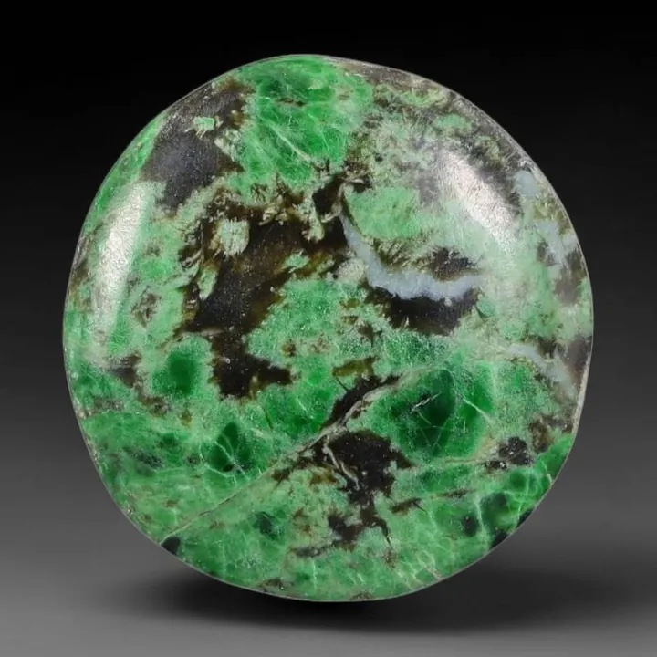
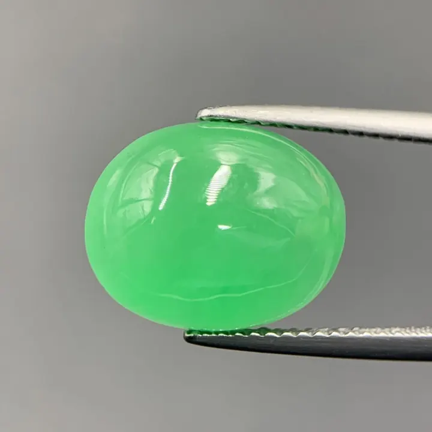

翡翠總論：硬玉與軟玉的千年誤會
「玉」這個字，把兩種截然不同的礦物綁在一起千百年——翡翠是硬玉，和田玉是軟玉，它們的差異比想像中大。


核心定義
翡翠（jadeite）與和田玉（nephrite）是寶石學上兩種完全不同的礦物，卻都被漢字「玉」收編了千年。翡翠是硬玉（jadeite，NaAlSi₂O₆，輝石族），硬度 6.5–7；和田玉是軟玉（nephrite，Ca₂(Mg,Fe)₅Si₈O₂₂(OH)₂，閃石族），硬度 6–6.5。「硬玉」與「軟玉」之名，正是來自這組硬度差異。
歷史脈絡：中國的「玉文化」源遠流長，但古人說的「玉」主要指和田玉（軟玉）；翡翠是明清時期才從緬甸傳入中國的「後起之秀」，因顏色豔麗迅速風靡宮廷與民間——兩種玉，一個是千年文化符號，一個是近世財富象徵。
特徵與分類
| 項目 | 翡翠（硬玉） | 和田玉（軟玉） |
|---|---|---|
| 礦物 | 輝石族 | 閃石族 |
| 硬度 | 6.5–7 | 6–6.5 |
| 光澤 | 玻璃光澤 | 油脂光澤 |
| 顏色 | 綠紫白黃紅多色 | 白青黃碧等 |
| 典型產地 | 緬甸、瓜地馬拉 | 新疆、青海、俄羅斯 |
翡翠以「玻璃光澤＋濃豔顏色」取勝，和田玉以「油脂溫潤＋內斂質感」著稱——兩者是美學路線不同的雙璧。翡翠講「種水色」，和田玉講「油潤白」，術語體系也各自獨立。
科學原理
硬玉是鈉鋁矽酸鹽（輝石族），晶體結構緊密、折射率約 1.66；軟玉是鈣鎂鐵矽酸鹽（閃石族），由細小纖維狀晶體交織而成，折射率約 1.60–1.62。纖維交織結構讓軟玉特別「韌」——耐撞擊、不易斷裂，這正是古代玉器能傳承千年的物理基礎。
翡翠的綠色來自鉻（Cr）或鐵（Fe）：鉻致色為鮮豔翠綠（帝王綠），鐵致色偏暗綠。和田玉的白來自透閃石為主體、青來自鐵——顏色機制完全不同。
鑑定與鑑別方法
- 看光澤：翡翠玻璃光、和田玉油脂光
- 比重測試：翡翠約 3.33、和田玉約 2.95
- 折射率：翡翠約 1.66、和田玉約 1.61
- 顯微鏡看結構：翡翠粒狀、和田玉纖維交織
- 聽聲音：翡翠敲擊聲清脆、和田玉沉悶
市場行情與保養建議
行情上，翡翠與和田玉各有體系：翡翠以「種水色」定價，頂級玻璃種帝王綠天價；和田玉以「油潤白度」定價，羊脂白玉一兩難求。近年翡翠市場熱度高於和田玉，但兩者都是華人文化的硬通貨。
選購提醒：兩者鑑定體系不同，證書要對應（翡翠證書標明 jadeite、和田玉證書標明 nephrite）；低價「玉」常是玉髓、石英岩或蛇紋石冒充——先認礦物，再談品質。
常見誤區
完全不同的礦物：輝石族 vs 閃石族，硬度、折射率、比重都不同。被「玉」字綁在一起，是文化不是科學。
和田玉的價值核心是「白與油潤」，羊脂白玉最貴；翠綠是翡翠的價值語言。用翡翠的標準衡量和田玉，是跨體系的誤會。
冷知識
「翡翠」原是兩種鳥名（翡為紅鳥、翠為綠鳥），後來借指顏色豔麗的玉石——一個鳥名，成了一種寶石的名字。
中國的玉器史可追溯至新石器時代（如紅山文化玉器），和田玉是這套文化系統的「正統」——比翡翠入華早了數千年。
反直覺觀點
和田玉的纖維交織結構讓它韌性極佳——耐撞耐摔，是古代玉璧能流傳千年的原因；翡翠的粒狀結構反而較脆。硬度輸，韌性贏。
長期佩戴的玉，油脂滲入表面微隙，光澤會變得更溫潤——「人養玉」是真的，但那是物理的油脂潤養，不是玄學。